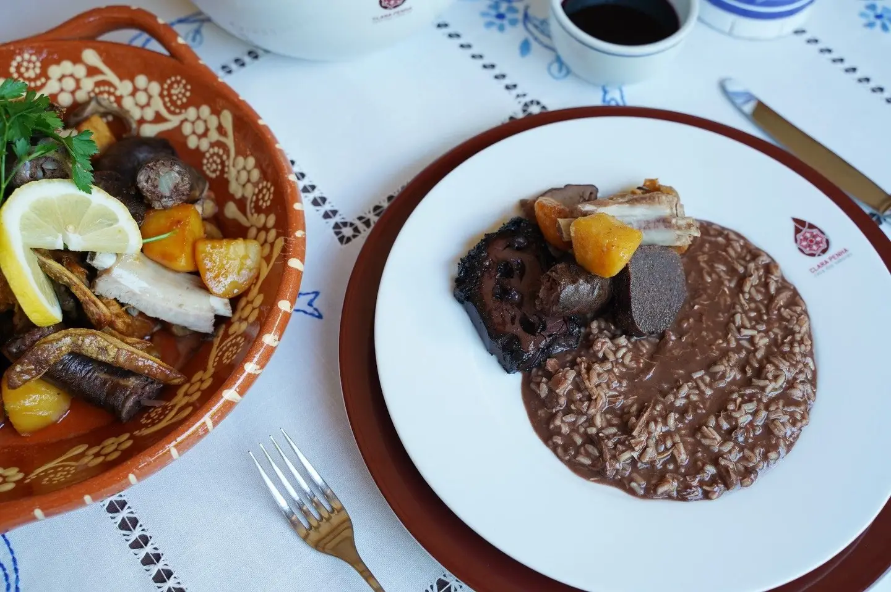
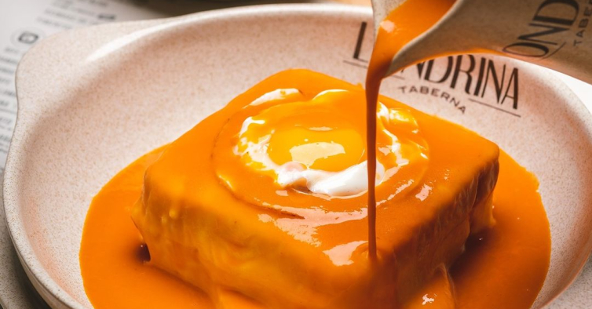
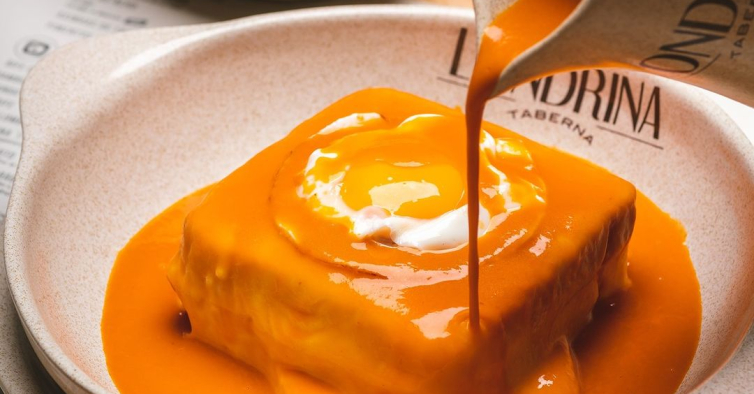
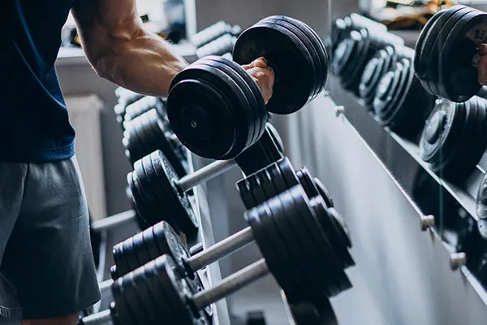
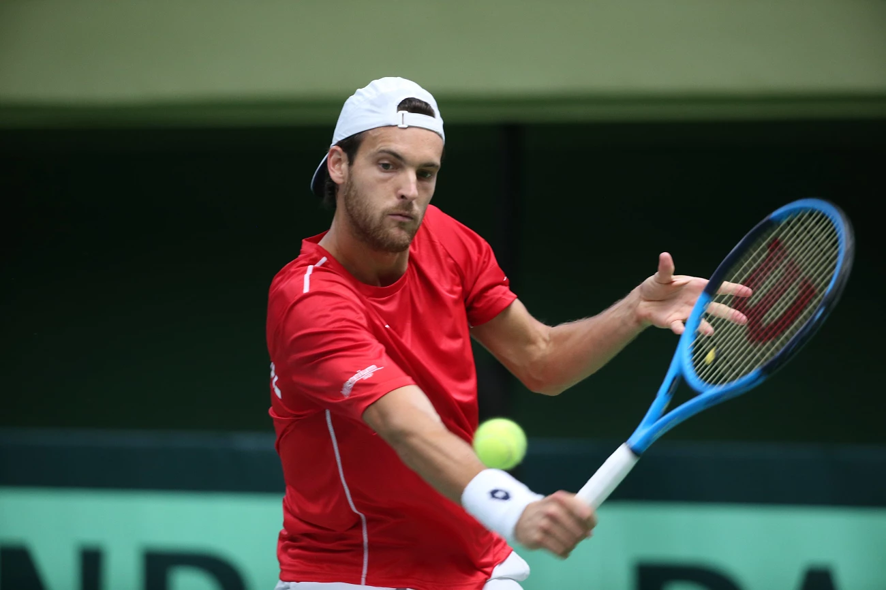

Gostos
Convívio
Amigos e Família
Das coisas que mais gosto de fazer é estar com pessoas de quem gosto, partilhar momentos.
Gastronomia

Arroz de Sarrabulho
Almoço & Jantar
 Pataniscas
Petisco

Francesinha
Almoço & Jantar
Pataniscas
Petisco

Francesinha
Almoço & Jantar
Desporto

Ginasio
Caminhadas

Tenis